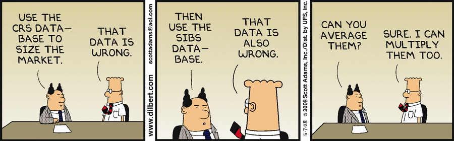
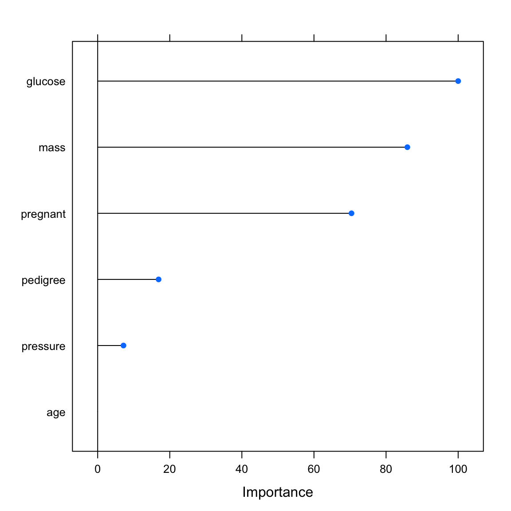
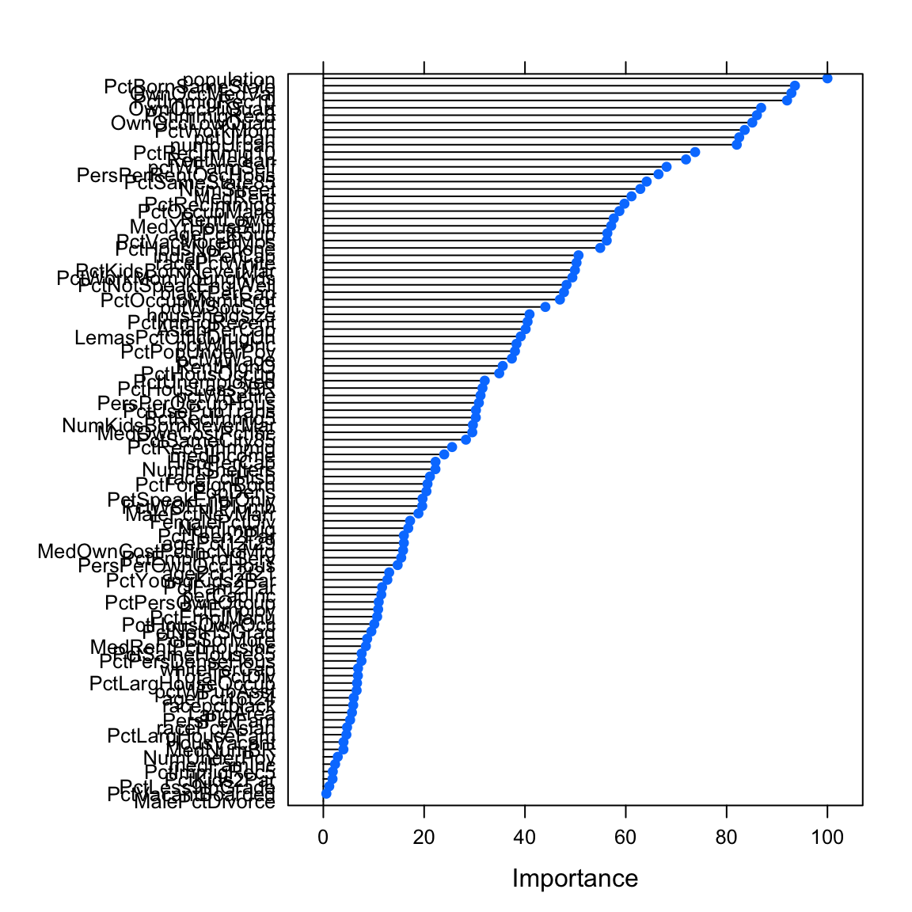
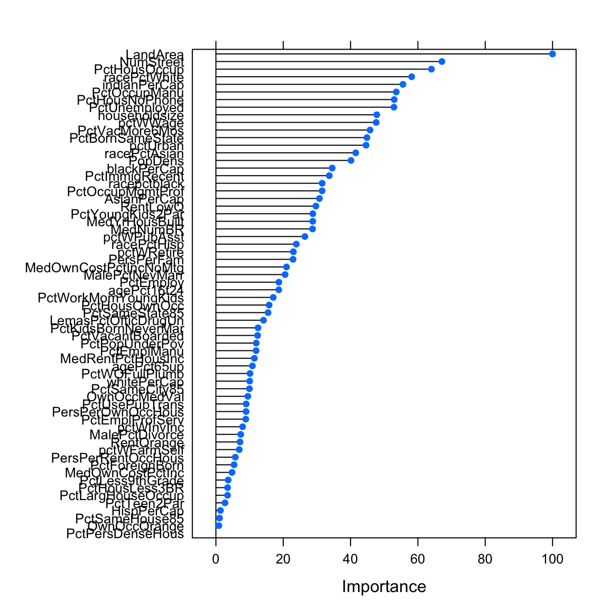
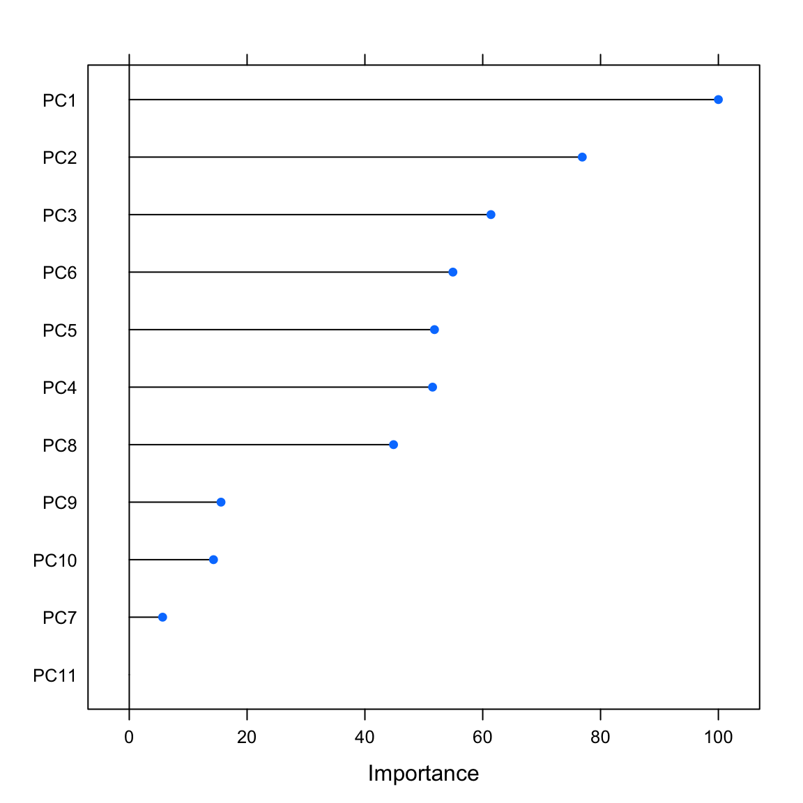

Features
Applied Machine Learning with R
Basel R Bootcamp

Basel R Bootcamp

from dilbert.com
Overview
By the end of this practical you will:
- Understand the importance of the curse of dimensionality.
- Know how to eliminate unwanted features.
- Explore and use feature importance.
- Use dimensionality reduction.
Datasets
| File | Rows | Columns |
|---|---|---|
| pima_diabetes | 724 | 7 |
| murders_crime | 1000 | 102 |
| violent_crime | 1000 | 102 |
| nonviolent_crime | 1000 | 102 |
- The
pima_diabetesis a subset of thePimaIndiansDiabetes2data set in themlbenchpackage. To see column descriptions, run the following:
library(mlbench) # Load ISLR package
?PimaIndiansDiabetes2 # Look at help menu for College- The
murders_crime,violent_crime, andnon_violent_crimedata are subsets of the Communities and Crime Unnormalized Data Set data set from the UCI Machine Learning Repository. To see column descriptions, visit this site: Communities and Crime Unnormalized Data Set
Glossary
| Function | Package | Description |
|---|---|---|
trainControl() |
caret |
Define modelling control parameters |
train() |
caret |
Train a model |
predict(object, newdata) |
stats |
Predict the criterion values of newdata based on object |
postResample() |
caret |
Calculate aggregate model performance in regression tasks |
confusionMatrix() |
caret |
Calculate aggregate model performance in classification tasks |
varImp() |
caret |
Determine the model-specific importance of features |
findCorrelation(), nearZeroVar() |
caret |
Identify highly correlated and low variance features. |
rfe(), rfeControl() |
caret |
Run and control recursive feature selection. |
Packages
| Package | Installation |
|---|---|
tidyverse |
install.packages("tidyverse") |
tibble |
install.packages("tibble") |
caret |
install.packages("caret") |
Examples
# Step 0: Load packages-----------
library(tidyverse) # Load tidyverse for dplyr and tidyr
library(tibble) # For advanced tibble functions
library(caret) # For ML mastery
# Step 1: Load, prepare, and explore data ----------------------
# read data
data <- read_csv("1_Data/mpg_num.csv")
# Convert all characters to factors
data <- data %>%
mutate_if(is.character, factor)
# Explore training data
data # Print the dataset
dim(data) # Print dimensions
names(data) # Print the names
# Step 2: Create training and test sets -------------
# Create train index
train_index <- createDataPartition(criterion,
p = .8,
list = FALSE)
# Create training and test sets
data_train <- data %>% slice(train_index)
data_test <- data %>% slice(-train_index)
# split predictors and criterion
criterion_train <- data_train %>% select(hwy) %>% pull()
predictors_train <- data_train %>% select(-hwy)
criterion_test <- data_test %>% select(hwy) %>% pull()
predictors_test <- data_test %>% select(-hwy)
# Step 3: Clean data -------------
# Test for excessively correlated features
corr_matrix <- cor(predictors_train)
corr_features <- findCorrelation(corr_matrix)
# Remove excessively correlated features
predictors_train <- predictors_train %>% select(-corr_features)
# Test for near zero variance features
zerovar_features <- nearZeroVar(predictors_train)
# Remove near zero variance features
predictors_train <- predictors_train %>% select(-zerovar_features)
# recombine data
data_train <- predictors_train %>% add_column(hwy = criterion_train)
# Step 4: Define training control parameters -------------
# Train using cross-validation
ctrl_cv <- trainControl(method = "cv")
# Step 5: Fit models -------------
# Fit glm vanilla flavor
hwy_glm <- train(form = hwy ~ .,
data = data_train,
method = "glm",
trControl = ctrl_cv)
# Fit with pca transformation
hwy_glm_pca <- train(form = hwy ~ .,
data = data_train,
method = "glm",
trControl = ctrl_cv,
preProcess = c('pca'))
# Fit scaling and centering
hwy_glm_sca <- train(form = hwy ~ .,
data = data_train,
method = "glm",
trControl = ctrl_cv,
preProcess = c('scale', 'center'))
# Get fits
glm_fit <- predict(hwy_glm)
glm_pca_fit <- predict(hwy_glm_pca)
glm_sca_fit <- predict(hwy_glm_sca)
# Step 6: Evaluate variable importance -------------
# Run varImp()
imp_glm <- varImp(hwy_glm)
imp_glm_pca <- varImp(hwy_glm_pca)
imp_glm_sca <- varImp(hwy_glm_sca)
# Plot variable importance
plot(imp_glm)
plot(imp_glm_pca)
plot(imp_glm_sca)
# Step 7: Select variables -------------
# Select by hand in formula
hwy_glm_sel <- train(form = hwy ~ cty,
data = data_train,
method = "glm",
trControl = ctrl_cv)
# Select by hand in data
hwy_glm_sel <- train(form = hwy ~ cty,
data = data_train %>%
select(-cyl, -displ, -year),
method = "glm",
trControl = ctrl_cv)
# Select by reducing pca criterion ---
# Reduce criterion to 50% variance epxlained
ctrl_cv_pca <- trainControl(method = "cv",
preProcOptions = list(thresh = 0.50))
# Refit model with update
hwy_glm_sel <- train(form = hwy ~ cty,
data = data_train %>%
select(-cyl, -displ, -year),
method = "glm",
trControl = ctrl_cv_pca,
preProcess = c('pca'))
# Step 8: Recursive feature elimination -------------
# Feature elimination settings
ctrl_rfe <- rfeControl(functions = lmFuncs, # linear model
method = "cv",
verbose = FALSE)
# Run feature elimination
profile <- rfe(x = predictors_train,
y = criterion_train,
sizes = c(1, 2, 3), # Features set sizes should be considered
rfeControl = ctrl_rfe)
# plot result
trellis.par.set(caretTheme())
plot(profile, type = c("g", "o"))
# Step 9: Evaluate models -------------
# you know how...Tasks
A - Setup
Open your
BaselRBootcampR project. It should already have the folders1_Dataand2_Code. Make sure that the data file(s) listed in theDatasetssection above are in your1_Datafolder.Open a new R script. At the top of the script, using comments, write your name and the date. Save it as a new file called
Features_practical.Rin the2_Codefolder.Using
library()load the set of packages for this practical listed in the packages section above.
## NAME
## DATE
## Feature Practical
library(tidyverse)
library(caret)- In the code below, we will load each of the data sets listed in the
Datasetsas new objects.
# Pima Indians diabetes
pima_diabetes <- read_csv(file = "1_Data/pima_diabetes.csv")
# (Non-) violent crime statistics
violent_crime <- read_csv(file = "1_Data/violent_crime.csv")
nonviolent_crime <- read_csv(file = "1_Data/nonviolent_crime.csv")
# murders crime statistics
murders_crime <- read_csv(file = "1_Data/murders_crime.csv")B - Pima Indians Diabetes
In this section, you will explore feature selection for the Pima Indians Diabetes data set. The Pima are a group of Native Americans living in Arizona. A genetic predisposition allowed this group to survive normally to a diet poor of carbohydrates for years. In the recent years, because of a sudden shift from traditional agricultural crops to processed foods, together with a decline in physical activity, made them develop the highest prevalence of type 2 diabetes and for this reason they have been subject of many studies.
Take a look at the first few rows of the pima diabetes data frame by printing then to the console.
Print the numbers of rows and columns of each data set using the
dim()function.Look at the names of the data frame with the
names()function.Open the data set in a new window using
View(). Do they look OK?
Splitting
- As always, before you do anything you need to make sure that you separate a hold-out data set for later. Create
pima_trainandpima_testusingcreateDataPartition()with as little as 15% of cases going into the training set. Also store the variablediabetesfrom the test set as a factor, which will be the criterion.
# split index
train_index <- createDataPartition(XX$XX, p = .15, list = FALSE)
# train and test sets
pima_train <- XX %>% slice(train_index)
pima_test <- XX %>% slice(-train_index)
# test criterion
criterion <- as.factor(pima_test$XX)# split index
train_index <- createDataPartition(pima_diabetes$diabetes, p = .15, list = FALSE)
# train and test sets
pima_train <- pima_diabetes %>% slice(train_index)
pima_test <- pima_diabetes %>% slice(-train_index)
# test criterion
criterion <- as.factor(pima_test$diabetes)Remove unwanted features
OK, with the training set, let’s get to work and remove some features.
- First split the training data into a data frame holding the predictors and the criterion using the code below.
# Select predictors
pima_train_pred <- pima_train %>% select(-XX)
# Select criterion
pima_train_crit <- pima_train %>% select(XX) %>% pull()# Select predictors
pima_train_pred <- pima_train %>% select(-diabetes)
# Select criterion
pima_train_crit <- pima_train %>% select(diabetes) %>% pull()- Although, this data set is rather small and rather well curated, test if there are any excessively correlated features using
cor()andfindCorrelation()using the code below. Are there any?
# determine correlation matrix
corr_matrix <- cor(XX_pred)
# find excessively correlated variables
findCorrelation(corr_matrix)# determine correlation matrix
corr_matrix <- cor(pima_train_pred)
# find excessively correlated variables
findCorrelation(corr_matrix)integer(0)- Now, test if there are any near-zero variance features Any of those?
# find near zero variance predictors
nearZeroVar(XX_pred)# find near zero variance predictors
nearZeroVar(pima_train_pred)integer(0)Feature importance
After having retained all features in the previous section, this section explores feature selection on grounds of feature importance. To do this, we first need to fit our model. How about a simple logistic regression aka method = 'glm'?
- Fit the
glmto the training data.
# fit regression
pima_glm <- train(diabetes ~ .,
data = XX,
method = XX
)# fit regression
pima_glm <- train(diabetes ~ .,
data = pima_train,
method = 'glm')- Evaluate feature importance using
varImp(). The function will show importance on a scale from 0 (least important feature) to 100 (most important feature). You can setscale = TRUEto see absolute importance measures in t-values.
# determine variable importance
varimp_glm <- varImp(XX)
# print variable importance
varimp_glm
# print variable importance
plot(varimp_glm)# determine variable importance
varimp_glm <- varImp(pima_glm)
# print variable importance
varimp_glmglm variable importance
Overall
glucose 100.00
mass 85.91
pregnant 70.41
pedigree 16.90
pressure 7.16
age 0.00# print variable importance
plot(varimp_glm)
Model comparison
- Fit the glm a second time using only the four best features and store the result in a different fit object.
# fit glm with best four features
pima_glm4 = train(diabetes ~ XX + YY + ZZ + AA,
data = XX,
method = XX)# fit glm with best four features
pima_glm4 = train(diabetes ~ glucose + mass + pregnant + pedigree,
data = pima_train,
method = 'glm')- Using both fits, all features versus the best four, predict the criterion and evaluate the prediction using
confusionMatrix(). Which modelglmis better?
# determine predictions for test data
pima_glm_pred <- predict(XX, newdata = XX)
pima_glm4_pred <- predict(XX, newdata = XX)
# evaluate the results
confusionMatrix(XX, reference = XX)
confusionMatrix(XX, reference = XX)# determine predictions for test data
pima_glm_pred <- predict(pima_glm, newdata = pima_test)
pima_glm4_pred <- predict(pima_glm4, newdata = pima_test)
# evaluate the results
confusionMatrix(pima_glm_pred, criterion)Confusion Matrix and Statistics
Reference
Prediction neg pos
neg 340 75
pos 63 136
Accuracy : 0.775
95% CI : (0.74, 0.808)
No Information Rate : 0.656
P-Value [Acc > NIR] : 9.15e-11
Kappa : 0.495
Mcnemar's Test P-Value : 0.349
Sensitivity : 0.844
Specificity : 0.645
Pos Pred Value : 0.819
Neg Pred Value : 0.683
Prevalence : 0.656
Detection Rate : 0.554
Detection Prevalence : 0.676
Balanced Accuracy : 0.744
'Positive' Class : neg
confusionMatrix(pima_glm4_pred, criterion)Confusion Matrix and Statistics
Reference
Prediction neg pos
neg 339 75
pos 64 136
Accuracy : 0.774
95% CI : (0.738, 0.806)
No Information Rate : 0.656
P-Value [Acc > NIR] : 1.66e-10
Kappa : 0.492
Mcnemar's Test P-Value : 0.396
Sensitivity : 0.841
Specificity : 0.645
Pos Pred Value : 0.819
Neg Pred Value : 0.680
Prevalence : 0.656
Detection Rate : 0.552
Detection Prevalence : 0.674
Balanced Accuracy : 0.743
'Positive' Class : neg
You might have observed that the model with two features less is actually slightly better than the full model (if this is not the case, keep in mind that the partitioning of the dataset was done randomly, i.e., if you do it a second time, your results may slightly change). Why do you think is that the case?
Play around: Up the proportion dedicated to training or use a different model, e.g.,
random forest, and see whether things change.
C - Murders
In this section, you will explore feature selection but use a data set with very different properties. The data combines socio-economic data from the ’90 Census, data from Law Enforcement Management and Admin Stats survey, and crime data from the FBI, allowing to analyse the relationship between various socio-demographic variables and whether murders have been committed (murders), the criterion of this exercise.
Take a look at the first few rows of the
murders_crimedata frame by printing then to the console.Print the numbers of rows and columns of each data set using the
dim()function.Look at the names of the data frame with the
names()function.Open the data set in a new window using
View(). Do they look OK?
Splitting
- Again, before you do anything you need to make sure that you separate a hold-out data set for later. Create
murders_trainandmurders_testusingcreateDataPartition()with again as little as 25% of cases going into the training set. Also store the variablemurdersfrom the test set as a factor, which will be the criterion.
# split index
train_index <- createDataPartition(murders_crime$murders, p = .25, list = FALSE)
# train and test sets
murders_train <- murders_crime %>% slice(train_index)
murders_test <- murders_crime %>% slice(-train_index)
# test criterion
criterion <- as.factor(murders_test$murders)Remove unwanted features
OK, with the training set, let’s get to work and remove some features.
- First split the training data into a data frame holding the predictors and the criterion using the code below.
# Select predictors
murders_train_pred <- murders_train %>% select(-murders)
# Select criterion
murders_train_crit <- murders_train %>% select(murders) %>% pull()- Test if there are any excessively correlated features using
cor()andfindCorrelation()using the code below. Are there any this time?
# determine correlation matrix
corr_matrix <- cor(murders_train_pred)
# find excessively correlated variables
findCorrelation(corr_matrix) [1] 11 17 27 30 40 41 44 48 49 53 54 55 57 58 59 60 61 64 71 81 84 85 87
[24] 7 8 13 20 21 31 43 1 62 67 79 51 91 56- Remove the excessively correlated features from the training predictor set.
# remove features
murders_train_pred <- murders_train_pred %>% select(- XX)# remove features
murders_train_pred <- murders_train_pred %>%
select(-findCorrelation(corr_matrix))- Test if there are any near-zero variance features Any of those this time?
# find near zero variance predictors
nearZeroVar(murders_train_pred)integer(0)- There were plenty of excessively correlated features but no near-zero variance predictors. Bind the reduced predictor set together with the criterion into a new, clean version of the training set.
# clean training set
murders_train_clean <- murders_train_pred %>%
add_column(murders = XX)# combine clean predictor set with criterion
murders_train_clean <- murders_train_pred %>%
add_column(murders = murders_train_crit)Model comparison
- Fit a
glmtwice, once using the original training set and once using the clean training set, and store the fits in separate objects.
# fit glm with best four features
murders_glm = train(murders ~ .,
data = XX,
method = 'glm')
# fit glm with best four features
murders_glm_clean = train(murders ~ .,
data = XX,
method = 'glm')# fit glm with best four features
murders_glm = train(murders ~ .,
data = murders_train,
method = 'glm')
# fit glm with best four features
murders_glm_clean = train(murders ~ .,
data = murders_train_clean,
method = 'glm')- You probably have noticed warning messages. They concern the very fact the features in both data sets, but especially the non-clean set, are still too highly correlated. Go ahead and evaluate the fits on the hold-out set. Which set of features predicts better?
# determine predictions for test data
murders_pred <- predict(murders_glm, newdata = murders_test)
murders_clean_pred <- predict(murders_glm_clean, newdata = murders_test)
# evaluate the results
confusionMatrix(murders_pred, criterion)Confusion Matrix and Statistics
Reference
Prediction no yes
no 445 196
yes 185 541
Accuracy : 0.721
95% CI : (0.697, 0.745)
No Information Rate : 0.539
P-Value [Acc > NIR] : <2e-16
Kappa : 0.44
Mcnemar's Test P-Value : 0.608
Sensitivity : 0.706
Specificity : 0.734
Pos Pred Value : 0.694
Neg Pred Value : 0.745
Prevalence : 0.461
Detection Rate : 0.326
Detection Prevalence : 0.469
Balanced Accuracy : 0.720
'Positive' Class : no
confusionMatrix(murders_clean_pred, criterion)Confusion Matrix and Statistics
Reference
Prediction no yes
no 464 204
yes 166 533
Accuracy : 0.729
95% CI : (0.705, 0.753)
No Information Rate : 0.539
P-Value [Acc > NIR] : <2e-16
Kappa : 0.458
Mcnemar's Test P-Value : 0.0544
Sensitivity : 0.737
Specificity : 0.723
Pos Pred Value : 0.695
Neg Pred Value : 0.763
Prevalence : 0.461
Detection Rate : 0.339
Detection Prevalence : 0.489
Balanced Accuracy : 0.730
'Positive' Class : no
Data compression with PCA
- Given the high features correlations it is sensible to compress the data using
principal component analysis(PCA). Create a third fit object using the original training set withpreProcess = c('pca')andtrControl = trainControl(preProcOptions = list(thresh = 0.8))in the training function. The first argument tells R to use PCA, the second specifies that exactly 80% of the variance should be retained.
# fit glm with best four features
murders_glm_pca = train(murders ~ .,
data = murders_train,
method = 'glm',
preProcess = c('pca'),
trControl = trainControl(preProcOptions = list(thresh = 0.8)))- Compare the prediction performance to the previous to the previous two models.
# determine predictions for test data
murders_pca <- predict(murders_glm_pca, newdata = murders_test)
# evaluate the results
confusionMatrix(murders_pca, criterion)Confusion Matrix and Statistics
Reference
Prediction no yes
no 471 171
yes 159 566
Accuracy : 0.759
95% CI : (0.735, 0.781)
No Information Rate : 0.539
P-Value [Acc > NIR] : <2e-16
Kappa : 0.515
Mcnemar's Test P-Value : 0.545
Sensitivity : 0.748
Specificity : 0.768
Pos Pred Value : 0.734
Neg Pred Value : 0.781
Prevalence : 0.461
Detection Rate : 0.345
Detection Prevalence : 0.470
Balanced Accuracy : 0.758
'Positive' Class : no
- Play around: Alter the amount of variance explained by the
PCA(usingthresh), increase the proportion dedicated to training, use a different model, e.g.,random forest, and see whether things change.
Feature importance
- Evaluate the feature importance for each of the three models.
# determine variable importance
varimp_glm <- varImp(murders_glm)
varimp_glm_clean <- varImp(murders_glm_clean)
varimp_glm_pca <- varImp(murders_glm_pca)
# print variable importance
varimp_glmglm variable importance
only 20 most important variables shown (out of 99)
Overall
population 100.0
PctBornSameState 93.5
OwnOccMedVal 92.9
PctImmigRec10 92.0
OwnOccHiQuart 86.8
PctImmigRec8 86.0
OwnOccLowQuart 85.1
PctWorkMom 83.6
pctUrban 82.5
numbUrban 82.0
PctRecImmig10 73.8
RentMedian 71.9
pctWFarmSelf 68.1
PersPerRentOccHous 66.5
PctSameState85 64.1
NumStreet 62.9
MedRent 61.1
PctRecImmig8 59.7
PctOccupManu 58.7
RentLowQ 57.6varimp_glm_cleanglm variable importance
only 20 most important variables shown (out of 64)
Overall
LandArea 100.0
NumStreet 67.1
PctHousOccup 64.0
racePctWhite 58.1
indianPerCap 55.6
PctOccupManu 53.6
PctHousNoPhone 53.0
PctUnemployed 52.9
householdsize 47.8
pctWWage 47.6
PctVacMore6Mos 45.8
PctBornSameState 44.9
pctUrban 44.6
racePctAsian 41.5
PopDens 40.1
blackPerCap 34.5
PctImmigRecent 33.7
racepctblack 31.6
PctOccupMgmtProf 31.5
AsianPerCap 30.8varimp_glm_pcaglm variable importance
Overall
PC1 100.00
PC2 76.90
PC3 61.39
PC6 54.94
PC5 51.81
PC4 51.49
PC8 44.86
PC9 15.57
PC10 14.30
PC7 5.66
PC11 0.00# print variable importance
plot(varimp_glm)
plot(varimp_glm_clean)
plot(varimp_glm_pca)
- Can you select a set of features based on feature performance that reliably beats predictions based on the pca-compressed training set?
Z - Violent & Non-violent Crime Data
Run similar analyses for the Violent and non-violent crime data sets predicting either the number of violent crimes per 100k inhabitants (
ViolentCrimesPerPop) or the number of non-violent crimes per 100k inhabitants (nonViolPerPop). This time the criterion is numeric, implying regression rather than classification. The features are identical to the murders analysis of the previous section.Use the computer to find a good set of features using recursive feature elimination with
rfe().
# split index
train_index <- createDataPartition(violent_crime$ViolentCrimesPerPop,
p = .8,
list = FALSE)
# train and test sets
violent_train <- violent_crime %>% slice(train_index)
violent_test <- violent_crime %>% slice(-train_index)
# remove extreme correlations (OPTIONAL)
# predictors <- violent_train %>% select(-ViolentCrimesPerPop)
# predictors <- predictors %>% select(-findCorrelation(cor(predictors)))
# violent_train_clean <- predictors %>%
# add_column(ViolentCrimesPerPop = violent_train$ViolentCrimesPerPop)
# Feature elimination settings
ctrl_rfe <- rfeControl(functions = lmFuncs, # linear model
method = "cv",
verbose = FALSE,
rerank = FALSE)
# Run feature elimination
profile <- rfe(x = violent_train %>% select(-ViolentCrimesPerPop),
y = violent_train$ViolentCrimesPerPop,
sizes = 1:(ncol(violent_train_clean)-1), # Features set sizes
rfeControl = ctrl_rfe)
# inspect cross-validation as a function of performance
plot(profile)